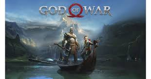

| Nombre del juego | Año de lansamiento |
Baldur’s Gate 3 |
2023 |
Elden Ring |
2022 |
It Takes Two |
2021 |
The Last of Us Parte II |
2020 | Sekiro: Shadows Die Twice |
2019 | God of War |
2018 | The Legend of Zelda: Breath of the Wild |
2017 | Overwatch |
2016 | The Witcher 3: Wild Hunt |
2015 | Dragon Age: Inquisition |
2014 | Grand Theft Auto V |
2013 | The Walking Dead |
2012 | The Elder Scrolls V: Skyrim |
2011 | Red Dead Redemption |
2010 | Uncharted 2: El reino de los ladrones |
2009 | Grand Theft Auto IV |
2008 | Bioshock |
2007 | The Elder Scrolls IV: Oblivion |
2006 | Resident Evil 5 |
2005 | GTA San Andreas |
2004 | Madden NFL 2004 |
2003 |
Baldur's Gate III es un videojuego de rol desarrollado por Larian Studios. Representa la tercera entrega principal de la serie Baldur's Gate, basada en el sistema de juego de rol de mesa Dungeons & Dragons.

Elden Ring es un videojuego de rol de acción en tercera persona, con una jugabilidad centrada en el combate y la exploración.
It Takes Two es un videojuego de acción y aventura con elementos de plataformas desarrollado por Hazelight Studios y publicado por Electronic Arts.
The Last of Us Part II es un videojuego de terror, acción y aventuras de 2020 desarrollado por Naughty Dog y publicado por Sony Interactive Entertainment para PlayStation 4.
Sekiro: Shadows Die Twice es un videojuego de acción y aventura desarrollado por From Software y distribuido por Activision.
God of War es un videojuego de acción-aventura hack and slash en tercera persona desarrollado por SCE Santa Monica Studio y publicado por Sony Interactive Entertainment.
The Legend of Zelda: Breath of the Wild es un videojuego de acción-aventura de 2017 de la serie The Legend of Zelda, desarrollado por la filial Nintendo EPD en colaboración con Monolith Soft y publicado por Nintendo para las consolas Wii U y Nintendo Switch.

Overwatch fue un videojuego de disparos en primera persona multijugador, desarrollado por Blizzard Entertainment
The Witcher 3: Wild Hunt es un videojuego de rol desarrollado y publicado por la compañía polaca CD Projekt RED.

Dragon Age: Inquisition es un videojuego de rol y acción que ha sido desarrollado por BioWare y ha sido publicado por Electronic Arts.
Grand Theft Auto V es un videojuego de acción-aventura de mundo abierto desarrollado por el estudio escocés Rockstar North y distribuido por Rockstar Games.
The Walking Dead es una serie de videojuegos de aventuras gráficas por episodios desarrollada y publicada por Telltale Games y Skybound Games, basada en la serie de cómics de The Walking Dead.
The Elder Scrolls V: Skyrim es un videojuego de rol de acción de mundo abierto desarrollado por Bethesda Game Studios y publicado por Bethesda Softworks.

Red Dead Redemption es un videojuego de acción-aventura de mundo abierto no lineal desarrollado por Rockstar San Diego y publicado por Rockstar Games.
Uncharted 2: El reino de los ladrones, titulado originalmente Uncharted 2: Among Thieves, es un videojuego de acción-aventura en tercera persona para PlayStation 3 y PlayStation 4 desarrollado por Naughty Dog y publicado por Sony Computer Entertainment.
Grand Theft Auto IV es un videojuego de acción-aventura de mundo abierto desarrollado por Rockstar North y distribuido por Rockstar Games.
BioShock es un videojuego de terror de disparos en primera persona desarrollado por Irrational Games, publicado el 21 de agosto de 2007 en Norteamérica para el sistema operativo Windows y la consola Xbox 360,
The Elder Scrolls IV: Oblivion es un videojuego de rol de acción de mundo abierto desarrollado por Bethesda Game Studios y publicado por Bethesda Softworks y Take-Two Games Interactive, filial de 2K Games.
Resident evil 5 es un videojuego de terror y de acción-aventura de disparos en tercera persona desarrollado y publicado por Capcom.
Grand Theft Auto: San Andreas es un videojuego de acción-aventura de mundo abierto de disparos en tercera persona desarrollado por Rockstar North y publicado por Rockstar Games.
Madden NFL 2004 es la 15.ª entrega de la serie de videojuegos de fútbol americano Madden NFL.